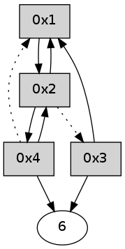

>> << IDX [start] -100 -25 -5 +0 +5 +25 +100 [320.019950151]
 Previous packets
----------------------------------------------------------------------
315.098871 beacon01(adaf) #0 coord=01,02,05,03,04,06 cycle=432.0ms assoc
-- color-indic=0 64 57 25
315.108832 beacon02(adaf) #0 coord=01,02,05,03,04,06 cycle=432.0ms assoc 64 06 da
315.118832 beacon05(adaf) #0 coord=01,02,05,03,04,06 cycle=432.0ms assoc 64 a0 f0
315.128834 beacon03(adaf) #0 coord=01,02,05,03,04,06 cycle=432.0ms assoc 64 3c d4
315.138833 beacon04(adaf) #0 coord=01,02,05,03,04,06 cycle=432.0ms assoc 64 9a fe
315.148833 beacon06(adaf) #0 coord=01,02,05,03,04,06 cycle=432.0ms assoc 64 ee e2
315.160523 [Hello(4): seq=111 sym=2 asym=6,1 sysInfo= stat=2:3,0,0,0/6:12,0,0,0/1:7,0,0,0]
----------------------------------------------------------------------
315.590979 beacon01(adaf) #0 coord=01,02,05,03,04,06 cycle=432.0ms assoc
-- color-indic=0 64 93 4a
315.600940 beacon02(adaf) #0 coord=01,02,05,03,04,06 cycle=432.0ms assoc 64 c2 b5
315.610940 beacon05(adaf) #0 coord=01,02,05,03,04,06 cycle=432.0ms assoc 64 64 9f
315.620940 beacon03(adaf) #0 coord=01,02,05,03,04,06 cycle=432.0ms assoc 64 f8 bb
315.630941 beacon04(adaf) #0 coord=01,02,05,03,04,06 cycle=432.0ms assoc 64 5e 91
315.640942 beacon06(adaf) #0 coord=01,02,05,03,04,06 cycle=432.0ms assoc 64 2a 8d
315.652645 [Hello(2): seq=610 sym=4,1 asym=3 sysInfo= stat=4:0,0,0,0/1:9,0,0,0/3:14,0,0,0]
----------------------------------------------------------------------
316.083086 beacon01(adaf) #0 coord=01,02,05,03,04,06 cycle=432.0ms assoc
-- color-indic=0 64 df fa
316.093046 beacon02(adaf) #0 coord=01,02,05,03,04,06 cycle=432.0ms assoc 64 8e 05
316.103049 beacon05(adaf) #0 coord=01,02,05,03,04,06 cycle=432.0ms assoc 64 28 2f
316.113047 beacon03(adaf) #0 coord=01,02,05,03,04,06 cycle=432.0ms assoc 64 b4 0b
316.123047 beacon04(adaf) #0 coord=01,02,05,03,04,06 cycle=432.0ms assoc 64 12 21
316.133048 beacon06(adaf) #0 coord=01,02,05,03,04,06 cycle=432.0ms assoc 64 66 3d
316.144743 [Hello(4): seq=112 sym=6,2 asym=1 sysInfo= stat=6:13,0,0,0/2:3,0,0,0/1:7,0,0,0]
316.147482 [Hello(1): seq=11 sym=2 sysInfo= stat=2:10,0,0,0]
----------------------------------------------------------------------
316.575194 beacon01(adaf) #0 coord=01,02,05,03,04,06 cycle=432.0ms assoc
-- color-indic=0 64 1b 95
316.585155 beacon02(adaf) #0 coord=01,02,05,03,04,06 cycle=432.0ms assoc 64 4a 6a
316.595155 beacon05(adaf) #0 coord=01,02,05,03,04,06 cycle=432.0ms assoc 64 ec 40
316.605155 beacon03(adaf) #0 coord=01,02,05,03,04,06 cycle=432.0ms assoc 64 70 64
316.615155 beacon04(adaf) #0 coord=01,02,05,03,04,06 cycle=432.0ms assoc 64 d6 4e
316.625155 beacon06(adaf) #0 coord=01,02,05,03,04,06 cycle=432.0ms assoc 64 a2 52
316.636860 [Hello(2): seq=611 sym=4,1 asym=3 sysInfo= stat=4:0,0,0,0/1:10,0,0,0/3:15,0,0,0]
----------------------------------------------------------------------
317.067301 beacon01(adaf) #0 coord=01,02,05,03,04,06 cycle=432.0ms assoc
-- color-indic=0 64 3e a8
317.077262 beacon02(adaf) #0 coord=01,02,05,03,04,06 cycle=432.0ms assoc 64 6f 57
317.087262 beacon05(adaf) #0 coord=01,02,05,03,04,06 cycle=432.0ms assoc 64 c9 7d
317.097262 beacon03(adaf) #0 coord=01,02,05,03,04,06 cycle=432.0ms assoc 64 55 59
317.107263 beacon04(adaf) #0 coord=01,02,05,03,04,06 cycle=432.0ms assoc 64 f3 73
317.117263 beacon06(adaf) #0 coord=01,02,05,03,04,06 cycle=432.0ms assoc 64 87 6f
317.128945 [Hello(4): seq=113 sym=6,2 asym=1 sysInfo= stat=6:14,0,0,0/2:3,0,0,0/1:8,0,0,0]
317.132294 [Hello(1): seq=12 sym=2 sysInfo= stat=2:11,0,0,0]
----------------------------------------------------------------------
317.559408 beacon01(adaf) #0 coord=01,02,05,03,04,06 cycle=432.0ms assoc
-- color-indic=0 64 fa c7
317.569369 beacon02(adaf) #0 coord=01,02,05,03,04,06 cycle=432.0ms assoc 64 ab 38
317.579369 beacon05(adaf) #0 coord=01,02,05,03,04,06 cycle=432.0ms assoc 64 0d 12
317.589370 beacon03(adaf) #0 coord=01,02,05,03,04,06 cycle=432.0ms assoc 64 91 36
317.599370 beacon04(adaf) #0 coord=01,02,05,03,04,06 cycle=432.0ms assoc 64 37 1c
317.609371 beacon06(adaf) #0 coord=01,02,05,03,04,06 cycle=432.0ms assoc 64 43 00
317.621059 [Hello(2): seq=612 sym=4,1 asym=3 sysInfo= stat=4:0,0,0,0/1:11,0,0,0/3:15,0,0,0]
----------------------------------------------------------------------
318.051518 beacon01(adaf) #0 coord=01,02,05,03,04,06 cycle=432.0ms assoc
-- color-indic=0 64 b6 77
318.061479 beacon02(adaf) #0 coord=01,02,05,03,04,06 cycle=432.0ms assoc 64 e7 88
318.071479 beacon05(adaf) #0 coord=01,02,05,03,04,06 cycle=432.0ms assoc 64 41 a2
318.081479 beacon03(adaf) #0 coord=01,02,05,03,04,06 cycle=432.0ms assoc 64 dd 86
318.091479 beacon04(adaf) #0 coord=01,02,05,03,04,06 cycle=432.0ms assoc 64 7b ac
318.101480 beacon06(adaf) #0 coord=01,02,05,03,04,06 cycle=432.0ms assoc 64 0f b0
318.113179 [Hello(4): seq=114 sym=6,2 asym=1 sysInfo= stat=6:15,0,0,0/2:3,0,0,0/1:9,0,0,0]
318.115884 [Hello(1): seq=13 sym=2 sysInfo= stat=2:12,0,0,0]
----------------------------------------------------------------------
318.543625 beacon01(adaf) #0 coord=01,02,05,03,04,06 cycle=432.0ms assoc
-- color-indic=0 64 72 18
318.553586 beacon02(adaf) #0 coord=01,02,05,03,04,06 cycle=432.0ms assoc 64 23 e7
318.563586 beacon05(adaf) #0 coord=01,02,05,03,04,06 cycle=432.0ms assoc 64 85 cd
318.573586 beacon03(adaf) #0 coord=01,02,05,03,04,06 cycle=432.0ms assoc 64 19 e9
318.583586 beacon04(adaf) #0 coord=01,02,05,03,04,06 cycle=432.0ms assoc 64 bf c3
318.593590 beacon06(adaf) #0 coord=01,02,05,03,04,06 cycle=432.0ms assoc 64 cb df
318.605271 [Hello(2): seq=613 sym=4,1 asym=3 sysInfo= stat=4:0,0,0,0/1:12,0,0,0/3:0,0,0,0]
----------------------------------------------------------------------
319.035734 beacon01(adaf) #0 coord=01,02,05,03,04,06 cycle=432.0ms assoc
-- color-indic=0 64 3f 1f
319.045696 beacon02(adaf) #0 coord=01,02,05,03,04,06 cycle=432.0ms assoc 64 6e e0
319.055695 beacon05(adaf) #0 coord=01,02,05,03,04,06 cycle=432.0ms assoc 64 c8 ca
319.065695 beacon03(adaf) #0 coord=01,02,05,03,04,06 cycle=432.0ms assoc 64 54 ee
319.075695 beacon04(adaf) #0 coord=01,02,05,03,04,06 cycle=432.0ms assoc 64 f2 c4
319.085696 beacon06(adaf) #0 coord=01,02,05,03,04,06 cycle=432.0ms assoc 64 86 d8
319.097072 [Hello(1): seq=14 sym=2 sysInfo= stat=2:13,0,0,0]
319.101046 [Hello(4): seq=115 sym=6,2 asym=1 sysInfo= stat=6:15,0,0,0/2:4,0,0,0/1:10,0,0,0]
----------------------------------------------------------------------
319.527841 beacon01(adaf) #0 coord=01,02,05,03,04,06 cycle=432.0ms assoc
-- color-indic=0 64 fb 70
319.537803 beacon02(adaf) #0 coord=01,02,05,03,04,06 cycle=432.0ms assoc 64 aa 8f
319.547802 beacon05(adaf) #0 coord=01,02,05,03,04,06 cycle=432.0ms assoc 64 0c a5
319.557804 beacon03(adaf) #0 coord=01,02,05,03,04,06 cycle=432.0ms assoc 64 90 81
319.567803 beacon04(adaf) #0 coord=01,02,05,03,04,06 cycle=432.0ms assoc 64 36 ab
319.577803 beacon06(adaf) #0 coord=01,02,05,03,04,06 cycle=432.0ms assoc 64 42 b7
319.589504 [Hello(2): seq=614 sym=4,1 asym=3 sysInfo= stat=4:0,0,0,0/1:13,0,0,0/3:1,0,0,0]